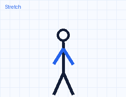

현장 카메라 CAM-01 — 작업자세(REBA) · 낙상 · 무동작 점검
꺼짐 · OFF
근로자 동의 거버넌스. 항목별 옵트인·가명 ID·목적 제한(안전)·기기 내 처리가 기본값입니다.
관제센터의 영상 열람은 동의 기반 브레이크글라스(60초 자동차단·전건 감사기록)로만 가능합니다 — 논문 §3.4.

휴식·스트레칭 처방 (Act 루프)
고위험 자세가 지속되었습니다. 90초 목·어깨 스트레칭 후 재측정하세요.
오늘의 현장
6근무 인원
0오늘 이벤트
0.0업링크 kbps
—현재 REBA
안전 포인트 → 지역화폐 DESIGN
0오늘 적립 포인트
0원지역화폐 전환 예정
스트레칭·휴식 완료, 대피 점호 응답 같은 안전 행동에만 적립됩니다 — 데이터 제공량과는 무관하며, 참여를 중단해도 불이익이 없습니다(비강요 원칙, 논문 T8). 지역사랑상품권 전환은 지자체 연계가 필요한 설계 목표로, 적립액이 구미·칠곡의 영세 상권에서 쓰이는 지역 환류 모델입니다.
멀티모달 센싱 로드맵
카메라 엣지 AI WORKING다인원 포즈·낙상·PPE·화재 픽셀 — 지금 이 페이지에서 실행.
웨어러블 심박·피로 PoCWeb Bluetooth 페어링 — 과로 지수의 생체 입력(현재 모의값).
레이더(mmWave)·열화상 DESIGN비접촉 움직임·체온 — 논문 Table 2 기준 설계 단계.
근로자 로스터 — 자세·심박·과로 누적 웨어러블 모의 데이터
| ID | 구역 | 심박 | REBA | 연속근무 | 피로 부하 | 상태 |
|---|